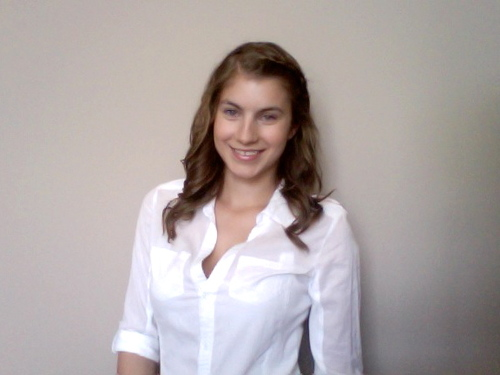

Members involved: Troy Sherman, Nicola Plummer and Liam Faught
Previous experiences of each member: TroyFirst-year Intern to BM at the Journal, Deputy Commissioner (MAC), Member of Journal Board, Member of Special Committee on External Alignment, AMS Municipal Affairs Commissioner, Intern Office to the Office of the Premiere (2011), Used to be a competitive Ski Racer
NicolaIntern to the VP External, Sponsorship Coordinator for Board Meeting (BM) and the Queen’s Leadership, Excellence and Development Conference (QLEAD), Volunteer Co-ordinator Queen’s Commerce Initiative Abroad(Q’CIA), Orientation Leader (Boss), Comm ’13 Second-Year President Co-Chair of QLEAD, ComSoc Outreach Commissioner, Queen’s Wears Green Organizer, President of Commerce Society, Summer Intern at Chubb Insurance
LiamIntern to Judicial Affairs Director, Common Ground Barista, Deputy Judicial Affairs Office, Commissioner of Internal Affairs, Intramural All-Star (ultimate frisbee, inner-tube water polo, soft-ball and soccer)
Why is your team running?
We are running as a team because we fundamentally believe that the AMS should be putting students first. The student body and AMS are faced with an array of challenges and it is incumbent upon an AMS Executive to advocate on their behalf and provide students with enriching opportunities. We came together as a team because we all have diverse experiences but we also have a proven track record of success in our various leadership positions.
What can students expect during your campaign?
- A comprehensive platform that s feasible and well-researched.
- A ton of visibility; students will see us a lot! In class talks, at our booths, and events!
- An extensive team of volunteers from a variety of backgrounds
- We will be honest and approachable when it comes to our ideas and opinions and we need to hear your criticism.
What is one thing students would be surprised to find out About your team?
Nicola is the first commerce student who has run for AMS Executive in over 5 years.
Troy loves all things French Canadian (especially poutine) and is fluent in French.
Liam types with his index fingers and has a very eccentric twitter account.
Our reporter for Team TNL: Rachel Herscovici

Rachel is currently one of the Journal’s three Assistant News Editors. She's a second-year English major and history minor who’s interested in covering human issues and campus news. She’s most excited about the Journal’s extensive coverage this year and hopes it helps engage students with the ongoing elections. Some of Rachel’s stories this year have included; Queen’s implementation of the Green Folder, the University safety audit and the Kingston Rocket. Rachel is looking forward to attending all the debates and getting to know all the candidates. You can catch her at @rachelhersci. She will be covering team Sherman-Faught-Plummer (TNL).